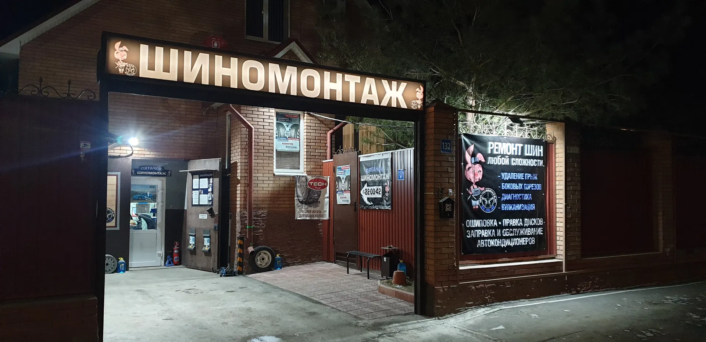
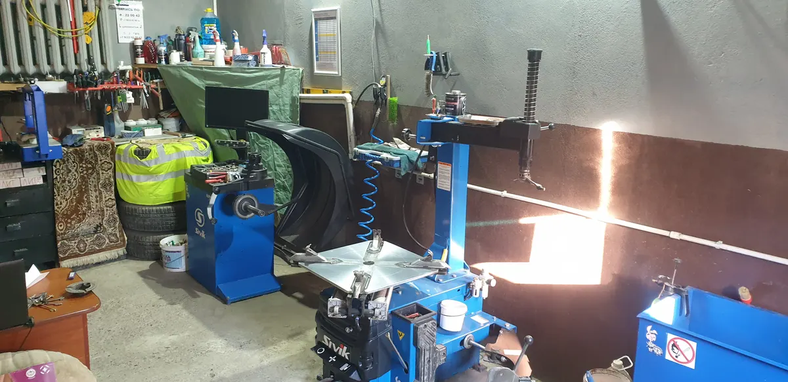
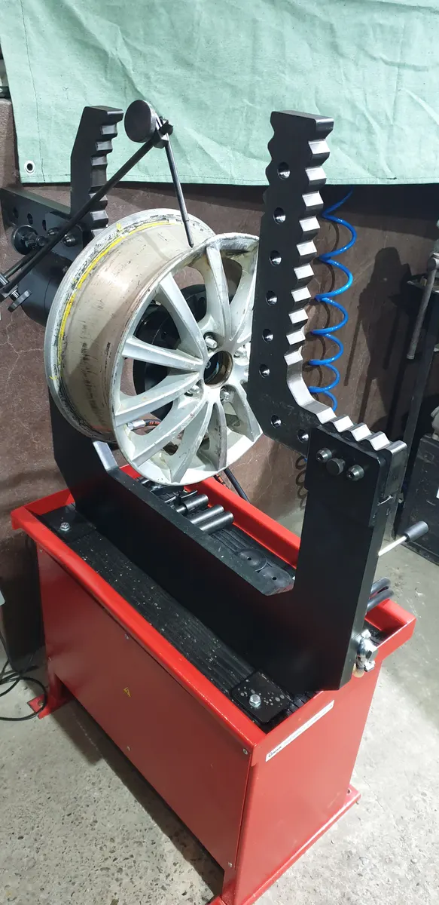
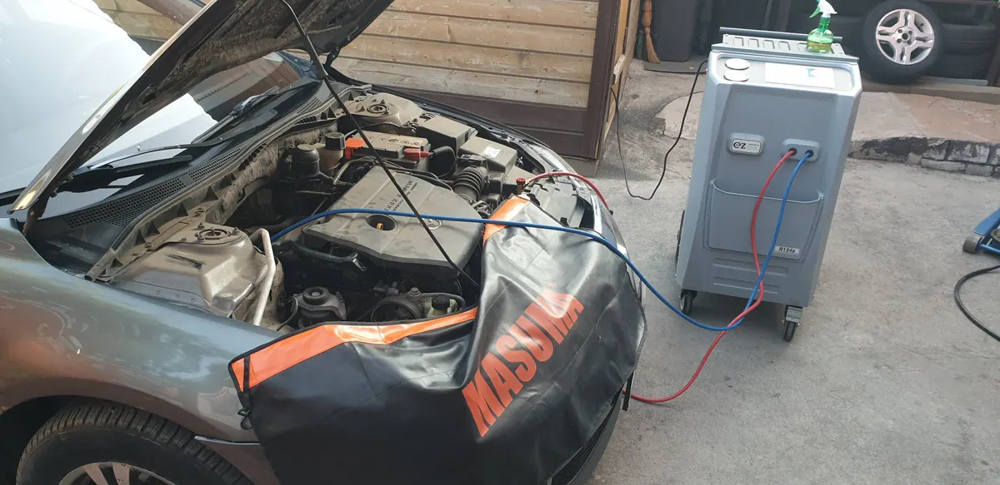

Шиномонтаж · Оренбург
Шиномонтаж в Оренбурге по записи – к своему времени
Туркестанская, 132. Переобувка, ремонт порезов, правка дисков, кондиционеры – выберите услугу и время прямо здесь.
- Каждый день 08:00–23:00
- Работаем по предварительной записи
- Хранение шин и выездной шиномонтаж

Услуги и цены
Стоимость работ зависит от радиуса и машины – назовём её до приезда по телефону или в мессенджере.
Работы
- Переобувка комплектаснять, перебортировать, поставитьуточнить
- Балансировкауточнить
- Ремонт прокола, вулканизацияуточнить
- Удаление грыж и боковых порезовуточнить
- Правка штампованных дисковот 500 ₽
- Ошиповка и дошиповкауточнить
- Заправка автокондиционерауточнить
- Хранение шинуточнить
Товары в наличии
- Болты крепления колёс100 ₽ за шт.
- Секретные болты1 500 ₽ комплект
- Колпачки и насадки на вентилинабор из 4 – 400 ₽100 ₽ за шт.
- Балансировочные грузы под цвет диска100 ₽
- Ремкомплект «отремонтируй колесо сам»500 ₽
- Незамерзайка150 ₽
- Пакеты для хранения шин200 ₽ 4 шт.
Как записаться
- 01
Выберите услугу, день и время
В форме наверху страницы.
- 02
Отправьте запись в WhatsApp
Текст соберётся сам, останется нажать «Отправить».
- 03
Приезжайте на Туркестанскую, 132
К выбранному времени, каждый день с 8 до 23.



Почему к нам едут
Подскажем по делу
Объясним, что с колесом, и поможем с выбором новой резины.
В сезон выходит больше мастеров
В часы наплыва работают больше сотрудников.
Ремонт шин любой сложности
Грыжи, боковые порезы, вулканизация, правка дисков.
Оплата как удобно
Наличные, карта, СБП или перевод.
Отзывы с Яндекс.Карт
«Замечательный шиномонтаж, сделали всё быстро и качественно. Езжу к ним уже второй год, вежливый персонал, всегда помогут решить проблему. Отдельное спасибо мастеру Ивану, сделал приятную скидку и проконсультировал по поводу покупки новой резины»
Vladimir Nevkov · 24 марта
«Отличный шиномонтаж! Адекватные цены. Ребята большие профессионалы! Всегда всё быстро и чётко. Пользуюсь их услугами уже не первый год и впредь только к ним.»
Ксюша422 · 1 февраля
«Отлично работают - переобувался у них несколько раз. В особые часы наплыва увеличивают количество сотрудников. Шиномонтаж занял 20 минут.»
Антон Бурлуцкий · 18 декабря 2024
Отзывы с карточки на Яндекс.Картах, без правок.
Частые вопросы
Обязательно записываться?
Работаем по предварительной записи – так вы приезжаете к своему времени. Если машин немного, примем и без записи.
Сколько стоит переобувка?
Зависит от радиуса и машины. Позвоните или напишите в WhatsApp – назовём цену до приезда.
Можно оставить шины на хранение?
Да, хранение шин есть. Пакеты для комплекта из четырёх колёс – 200 ₽.
Есть выездной шиномонтаж?
Да. Условия и стоимость выезда уточните по телефону.
Запишитесь к своему времени
- Адрес
- Туркестанская улица, 132, Оренбург
- Часы
- Каждый день 08:00–23:00
- Телефон
- +7 (3532) 22-00-42